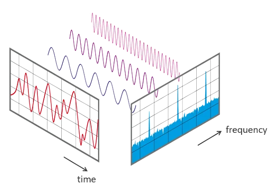
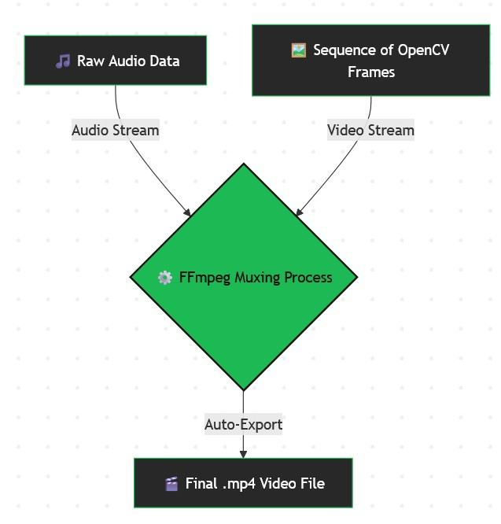

How It Works Under the Hood
The original Pro Audio Visualizer is a Python-based software suite built using powerful audio processing libraries like PyAudio, Librosa, and NumPy, with graphics rendered in Pygame.
The Audio Math

- Noise Gating (RMS): The tool calculates the Root Mean Square (RMS) of the audio chunks to filter out background static when using a live microphone.
- Frequency Analysis (FFT): Using Fast Fourier Transform, raw audio waveforms are broken down into individual frequency bands, which dictate the height and length of the visualizer bars.
- Pitch Detection: For tools with Note Detection, the code uses mathematical Autocorrelation to find the fundamental pitch, mapping it to standard MIDI notes (like C# or G4).
Video Auto-Export

When processing static audio files (.mp3, .wav), the suite captures individual frames using OpenCV and routes them through a bundled FFmpeg script. This muxes the raw frames and the audio track together into a high-quality, ready-to-share .mp4 file.